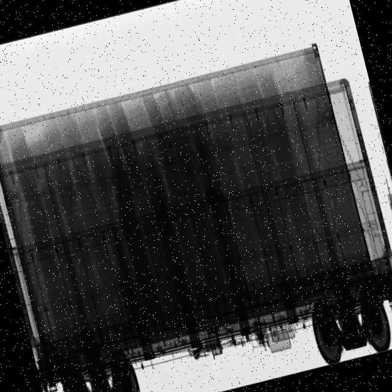
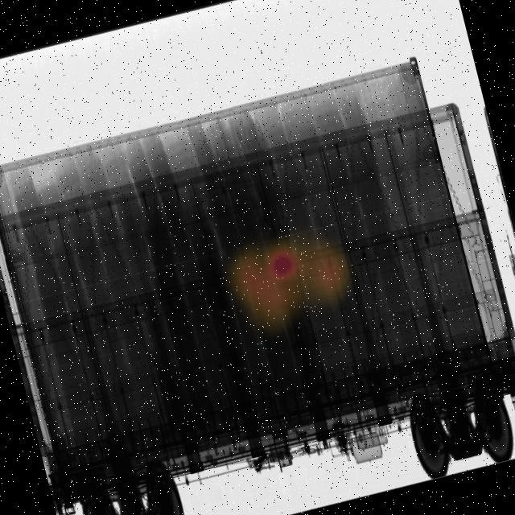

Abra a radiografia de um caso
anomalia.png · 640 × 640

Analisando imagem do caso… Cancelar análise
anomalia.png · 640 × 640

anomalia.png · 640 × 640
anomalia.png · 640 × 640
anomalia.png · 640 × 640
anomalia.png · 640 × 640
anomalia.png · 640 × 640
Confira o caso e o conteúdo. O PDF é salvo neste computador; o encaminhamento a quem decide segue o procedimento institucional, fora da Mesa.
anomalia.png · 640 × 640
Abra a radiografia de um caso
A Mesa aceita radiografias PNG ou JPEG. Nada foi analisado e nenhum dado do caso foi alterado.
Se a radiografia estiver corrompida, obtenha uma nova cópia no sistema de origem.
anomalia.png · 640 × 640
O serviço de análise local não respondeu. Não há resultado do modelo para este caso: isso não equivale a “sem indício”.
A radiografia continua aberta; você pode examiná-la com os ajustes enquanto decide.
anomalia.png · 640 × 640
anomalia.png · 640 × 640
anomalia.png · 640 × 640
Este caso tem registros que ainda não foram exportados:
Ao trocar, esses registros serão descartados. A radiografia original não é alterada.
anomalia.png · 640 × 640
Você escolheu Sem ressalvas na imagem, e o modelo indicou indício de atipicidade na região destacada.
Discordar é permitido: a conclusão é sua. Confirme que revisou a região e explique o motivo na justificativa.
Mesa de inspeção · protótipo demonstrativo do TCC · dados fictícios
| Caso (S01) | CASO-DEMO-0417 |
| Unidade de carga | MSKU 000000-0 |
| Carga declarada (S13) | Paletes de madeira · 18.400 kg |
| Responsável (S11) | Gustavo Onofre (autoria declarada, sem assinatura institucional) |
| Emitido em (S18) | 17/11/2026 03:12 (UTC−03:00), relógio da estação |
Indicação do modelo (S04): indício de atipicidade. O mapa de atenção (S05) aparece na página 2 e é aproximado. O modelo não identifica o tipo de ilícito; a conclusão acima é do responsável.